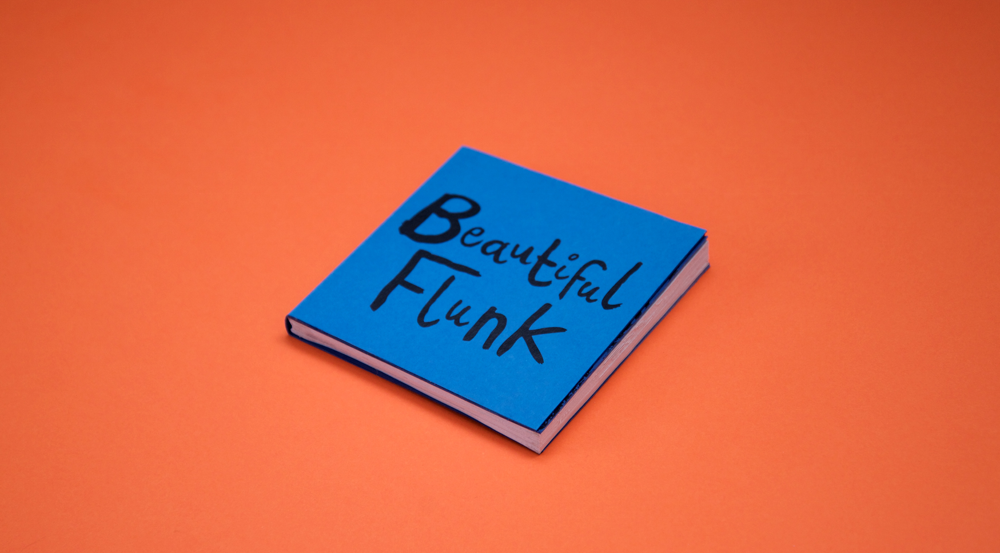
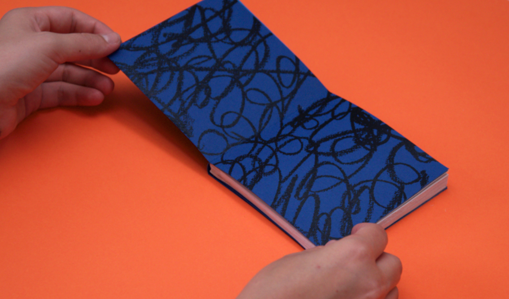
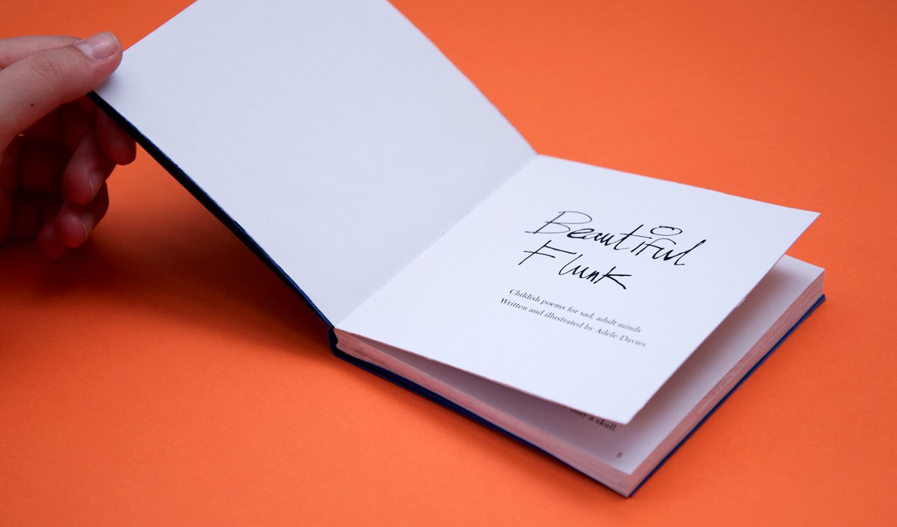
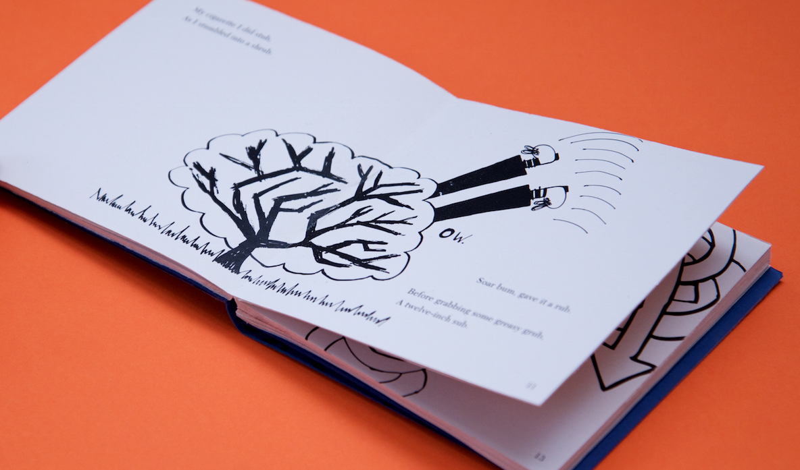
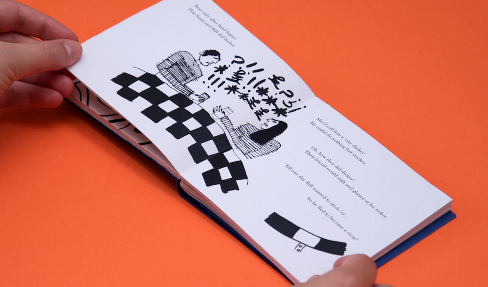
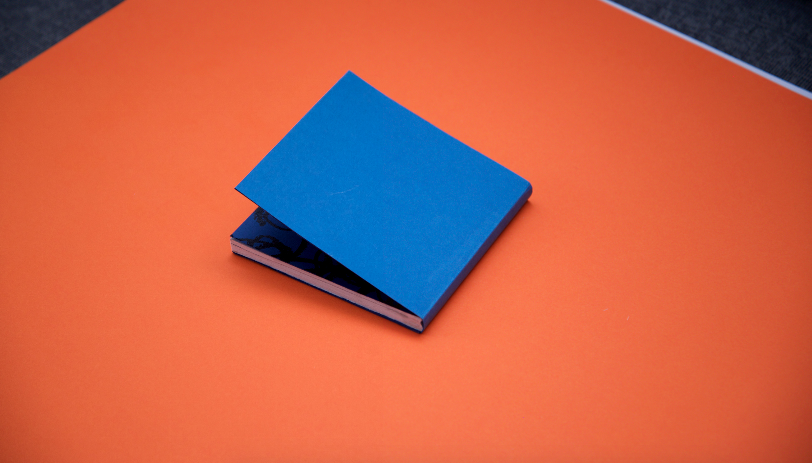

Beautiful Flunk
Inspired by the great tradition of absurdist, surreal humour in the UK and poets/illustrators such as Spike Milligan, I set about creating an illustrated book of whimsical self-written poetry for an adult audience. The aim of this project was to create a collection of poems illustrated with a childish visual language that would be juxtaposed with the melancholy contents.